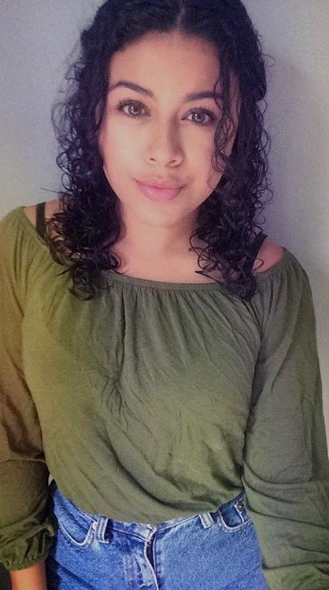

About Me

My name is Jacqueline Galdamez and I am currently a waiter at upscale
restaurant Burton's Grill & Bar which serves American food.
Although I've been in the restaurant industry for four years
I decided to make a change in careers by continuing my education. After saving money
and doing a bunch of research I came across the web developement program provided by
George Washington University. Having a passion for learning and improving has been my
motivation to study Web Developement in which there is plenty of room for growth.
Some of my favorite hobbies include photography, cosmetology, coding and working out.